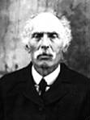
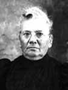
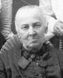
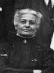
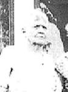

fiche familiale
******************************************************************************
Joseph-François Nolin
décède à l'âge de 72 ans
Naissance le 26 avril 1823 à St-Gervais, cté Bellechasse
Dit "Jos".
Décès le 17 novembre 1895 à St-Gervais, cté Bellechasse
Père: François Nolin
Mère: Marguerite Chabot
Mariage le 8 août 1848 à St-Charles, cté Bellechasse
Épouse: Caroline Fournier
décède à l'âge de 74 ans.
Naissance le 4 juillet 1830 à St-Charles, cté Bellechasse
Décès le 26 décembre 1904 à St-Gervais, cté Bellechasse
Décédée chez sa fille Emma.
Père: Joseph Fournier
Mère: Marie-Louise Paré
*******************************************************************************
  |
Enfant 1 Marie-Apolline Nolin décède à l'âge de 83 ans. Naissance en avril 1849 à St-Gervais, cté Bellechasse Décès le 23 décembre 1932 à Picardville, AB. Dite Marie (ses ancêtres) Mariage le 19 juillet 1876 à St-Gervais, cté Bellechasse Conjoint: Louis-Firmin Provost n. 18 février 1850 d. 4 janvier 1929. (sa famille) |
|   |
Enfant 2 Mizaël Nolin décède à l'âge de 72 ans Naissance en 1855 Décès le 8 avril 1927 à Ste-Rose-de-Watford, cté Dorchester Mariage le 19 août 1889 à St-Sauveur de Québec Conjointe: Victorine-Caroline Lemay n. en 1855 d. en octobre 1929. Père: Bernard Lemay Mère: Anastasie Pleau |
Enfant 3 Gervais-Joseph Nolin
Mariage le 12 août 1884 à St-Lambert-de-Lauzon, cté Lévis
Conjointe: Marie-Démerise Bernard
Père: Pierre Bernard
Mère: Marie Boutin
-------------------------------------------------------------------------------
Enfant 4 Auguste Nolin
-------------------------------------------------------------------------------
Enfant 5 Gaudias Nolin
Décès le 2 décembre 1911 à St-Damien, cté Berthier
Mariage le 23 octobre 1882 à la Cathédrale d'Ottawa
Conjointe: Éléonore Cousineau
Père: Alexandre Cousineau
Mère: Angélique Montpetit
-------------------------------------------------------------------------------
Enfant 6 Marie-Mathilde Nolin
Mariage le 26 juin 1893 à St-Gervais, cté Bellechasse
Conjoint: Pierre Fradette
Père: Pierre Fradet
Mère: Apolline Côté
-------------------------------------------------------------------------------
|  |
Enfant 7 Agnès Nolin Conjoint: Winthrop Sampson |
|  |
Enfant 8 Emma Nolin Conjoint: Joseph Lapointe |
Enfant 9 Marie-Zorilla Nolin
Mariage le 26 novembre 1884 à St-Gervais, cté Bellechasse
Conjoint: Joseph Bilodeau
Père: Jérôme Bilodeau
Mère: Marie Boissonneault
-------------------------------------------------------------------------------
|  |
Enfant 10 Valéda Nolin Conjoint: Joseph Cadorette |